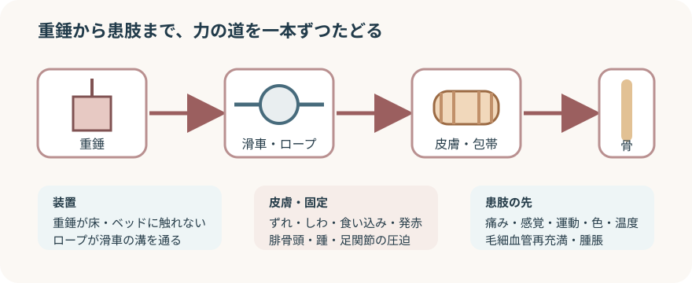

介達牽引と直達牽引の違い

介達牽引は皮膚を介する
- 力の経路：重錘 → ロープ → 牽引具 → 皮膚・軟部組織 → 骨
- 重点観察：包帯のずれ、皮膚障害、局所圧迫、末梢神経血管
- 直達牽引：ピンや鋼線を骨へ刺入し、骨へ直接牽引力を伝える
- 目的は骨折部の整復・安静、肢位保持、筋攣縮や痛みの軽減など。
- 目的や期間は疾患・骨折型・治療計画で異なる。
開始時に基準をそろえる
- 指示：部位、方向、重量、肢位、安静度、観察間隔、移動方法
- 患者：本人確認、説明、痛み、鎮痛効果、理解、不安
- 患肢：左右の皮膚色・温度・腫脹、感覚、運動、毛細血管再充満、必要時の末梢脈拍
- 皮膚：発赤、創、擦過傷、水疱、浮腫、脆弱性、テープ類への反応
- 装置：牽引具のサイズ、固定位置、ロープ、滑車、重錘、対抗牽引
牽引装置を一本の線でたどる
- 患者と患肢の位置
- 身体がベッド上でずれていないか。
- 指示された肢位と牽引方向が一直線か。
- 体重などによる対抗牽引が保たれているか。
- 牽引具と包帯
- ずれ、緩み、しわ、ねじれ、局所的な食い込みがないか。
- 腓骨頭、踵、足関節、骨突出部が圧迫されていないか。
- ロープと滑車
- ロープが滑車の溝にあるか。
- 寝具・ベッド柵・物品に触れていないか。
- 結び目が滑車へ当たっていないか。
- 重錘
- 指示された重さか。
- 床、ベッド、壁に触れず自由に下がっているか。
- 確認後の患者
- 痛みと末梢神経血管所見をもう一度確認する。
- 装置を直した前後で変化を比べる。
自己判断で牽引力を変えない
- 重錘を外す、足す、ベッドへ載せる、手で持ち上げ続ける操作はしない。
- 移乗・検査・清潔ケアで牽引を一時変更する場合も、方法と担当者を先に確認する。
- ずれや異常を見つけたら、患肢を支え、指示・院内手順に沿って応援を求める。
観察は「痛み・感覚・運動・循環・皮膚」
- 痛み：部位、強さ、増え方、鎮痛薬への反応、他動運動での増悪
- 感覚：しびれ、ピリピリ感、感覚低下、健側との差
- 運動：足趾・足関節など指示範囲の自動運動、動かしにくさ、下垂足
- 循環：皮膚色、温度、毛細血管再充満、腫脹、必要時の末梢脈拍
- 皮膚：テープ・包帯下の痛み、発赤、水疱、びらん、湿潤、圧痕、ずれ
- 圧迫部：腓骨頭、踵、外果・内果、仙骨部、架台や枕が当たる場所
皮膚と全身を守る
皮膚・固定
- 牽引を保ったまま観察できる方法と人数を先に決める。
- 包帯の巻き直しや牽引具の交換は、患肢を支える人を確保し院内手順で行う。
- 汗や失禁による湿潤、寝具のしわ、踵の圧迫を減らす。
長期臥床による合併症
- 呼吸状態、食事・水分、排泄、睡眠、せん妄、褥瘡、静脈血栓塞栓症のリスクを評価する。
- 許可された範囲で深呼吸、健側・上肢運動、等尺性運動、関節運動を支援する。
- 弾性ストッキングや間欠的空気圧迫法、抗凝固薬は個別指示を確認する。
すぐ共有する変化
- 急に強くなる痛み、鎮痛しても軽減しない痛み
- 他動運動で増悪する痛み、緊満した腫脹
- 新しいしびれ、感覚低下、運動低下、下垂足
- 蒼白、チアノーゼ、冷感、毛細血管再充満の遅れ、末梢脈拍の変化
- 水疱、びらん、急な発赤、出血、包帯の強い食い込み
- 装置の外れ、ロープの脱落、重錘の接地、患者の大きなずれ
- 呼吸困難、胸痛、意識変化などの全身急変
- 施設の急変対応基準を優先する。
- 時刻、直前の動作、所見、装置の状態、行った対応、再評価を記録する。
報告・記録
- 牽引の種類、部位、方向、重量、肢位、装着・確認時刻
- 患者の位置、牽引具・包帯、ロープ、滑車、重錘の状態
- 痛み、感覚、運動、皮膚色、温度、毛細血管再充満、腫脹、末梢脈拍
- 皮膚状態と圧迫部位、清潔ケア、除圧、運動・安静度
- 異常所見、報告先、指示、対応、対応後の変化